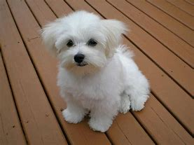

El bichón maltés ha sido un animal muy preciado en la alta sociedad. De hecho, se habla que un ejemplar que se vendió en el siglo XVI costó el equivalente a 2.000 dólares.
El bichón maltés es un perro pequeño que pesa entre 1 y 3 kg.
Tiene el cuerpo compacto y los omóplatos inclinados. La espalda está nivelada y las costillas bien salidas. Lleva la cola ligeramente rizada sobre la espalda. El cuello es de estructura elegante y le permite llevar la cabeza bien alta.
La cabeza está bien proporcionada con respecto al cuerpo y el cráneo es ligeramente redondo. Las orejas caídas son de implantación baja con muchos pelo. Los ojos son oscuros, la trufa negra y el hocico de longitud media y ligeramente afilado.
Si se deja el pelo largo, este llega a barrer el suelo y su aspecto sedoso le confiere al bichón maltés un aspecto casi ornamental. El largo pelo de la cabeza puede sujetarse en un moño o dejarse suelto. El color del pelo es blanco puro.
El bichón maltés se mueve con pasos ligeros y fluidos.
El bichón maltés es dulce, cariñoso, inteligente, receptivo y confiado, son buenos perros de familia, juguetones, alegres y enérgicos, y suelen disfrutar aprendiendo trucos. Ante niños chillones, pueden mostrar mal genio. Su constitución menuda se contradice con su osada presencia. El bichón maltés, extremadamente vigilante, emite un torrente de ladridos en respuesta a ruidos desconocidos.
El bichón maltés es un perro adecuado para interiores que se siente realizado incluso en pisos y espacios pequeños. Puede resultar complicado adiestrar a esta raza para controlar sus esfínteres, y tienden a ser caprichosos a la hora de comer. La muda de los bichones malteses es ligera y son mascotas aceptables para la mayor parte de alérgicos. Se recomienda realizar un cepillado diario y baños habituales para evitar que el pelo se enrede. El pelo que rodea los ojos debe limpiarse a diario para evitar un lagrimeo excesivo.
Durante más de veintiocho siglos, el spaniel maltés ha sido el aristócrata del mundo de los perros. Se cree que el Bichón maltés procede de Malta, una isla al sur de Sicilia. Parece muy oportuno que un perro tan noble se originase en Malta, cuya civilización se caracterizaba por su sofisticación y opulencia.

Un bichón maltés digno de mención, Issa, era propiedad de Publio, el gobernador de Malta en el siglo I. Una célebre inscripción describía a Issa como "travieso más puro que el beso de una paloma, más dulce que una doncella más valioso que las joyas indias". Muchos escritores y académicos famosos, como Plinio el Viejo y Estrabón, escribieron sobre la belleza, finura e irresistible encanto del minúsculo bichón maltés. Los griegos erigieron tumbas a estos animales y, desde el siglo V, estos ornamentados perros se representan en el arte cerámico griego. Se han conservado pruebas arqueológicas que demuestran que los egipcios tenían Bichones malteses, raza a la que posiblemente adoraban.
El bichón maltés ha sido un animal muy preciado en la alta sociedad a lo largo de la historia. De hecho, se habla de un bichón maltés que se vendió en el siglo XVI por el equivalente a 2.000 dólares. Al parecer los bichones malteses eran especialmente populares entre las mujeres, que los llevaban en sus pecheras o mangas. Los académicos de tiempos pasados constantemente hacían notar el tamaño diminuto de esta raza. En 1792, el botánico Linneo dijo, refiriéndose a los bichones malteses, que "eran más bien del tamaño de las ardillas". El primer Bichón maltés que se expuso en los Estados Unidos era blanco y se registró como "perro león maltés" en la primera exposición canina de Westminster, en 1877. El American Kennel Club registró esta raza en 1888.